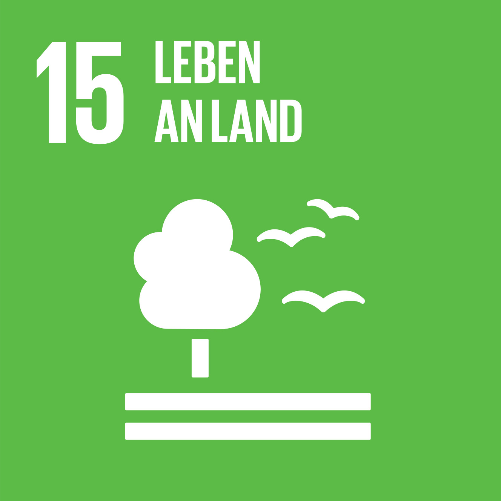
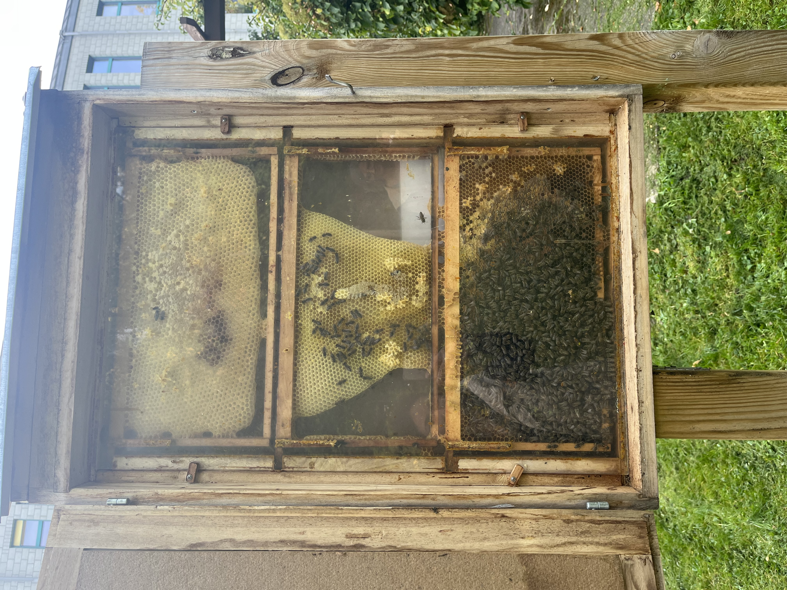

Landökosysteme schützen, wiederherstellen und ihre nachhaltige Nutzung fördern, Wälder nachhaltig bewirtschaften, Wüstenbildung bekämpfen, Bodendegradation beenden und umkehren und dem Verlust der biologischen Vielfalt ein Ende setzen.
SDG 15: Leben an Land

Welchen Einblick bietet ein Schaukasten in das Leben eines Honigbienenvolks?

- Ein Schaukasten bietet einen faszinierenden Einblick in das Leben eines Honigbienenvolks und ermöglicht es, viele Aspekte ihres Verhaltens und ihrer Organisation zu beobachten. Hier sind einige Eindrücke, die ein Schaukasten bieten kann: Bienenaktivität: In einem Schaukasten kann man die Aktivität der Bienen beobachten, wie sie ein- und rausfliegen, Nahrung sammeln und im Bienenstock arbeiten. Dies ermöglicht einen Einblick in den geschäftigen Alltag eines Bienenvolks.
- Brutentwickling: Ein Schaukasten erlaubt es, die Entwicklung der Brutstadien, von den Eiern der Larven zu beobachten.
- Wabenstrucktur: Die Wabenstrucktur im Schaukasten zeigt, wie die Bienen ihre Waben organisieren, um Honig, Pollen und Brut zu lagern.
- Bienenkommunikation: Ein Schaukasten Kann Auch die Kommunikation innerhalb des Bienenvolks verdeutlichen, einschließlich der Zusammenarbeit zwischen den Arbeiterinnen und der Königin.
Was ist der Unterschied zwischen Honigbienen und Wildbienen?
- Lebensweise: - Honigbienen sind sozial und leben in großen Kolonien mit einer Königin, Arbeiterinnen und Drohnen(männliche Bienen). Sie sameln Nektar und Pollen, um Honig zu Produzieren. -Wildbienen sind einsame Bienen, die alleine leben und keine Kolonien bilden. Jedes Weibchen gräbt ihr eigenes Nest im Boden.
- Aussehen: - Honigbienen sind eher schwarz oder braun mit gelben Streifen und haben ein dicht behaartes Körpergewand. - Wildbienen können in Farbe und Größe variieren, sind jedoch oft kleiner und schlanker als Honigbienen
- Nistverhalten: - Honigbienen bauen Waben in Bienenstöcken und leben gemeinschaftlich wildbienen graben Nester im Boden und legen ihre Eier in einzelne Zellen

Welche Rolle spielt die Wildblumenweise?

- Nahrungsquelle: - Wildblumenwiese sind reich an Nektar und Pollen, was eine wichtige Nahrungsquelle für sowohl Honigbienen als auch Wildbienen darstellt. Diese Blumen liefern eine Vielzahl von Blütenpflanzen.
- Fortpflanzung und Nistplätze: Neben der Nahrungssuche können Wildblumenwiesen auch als Nistplätze dienen. Wildbienen graben oft ihre Nester im Boden nahe solchen Blumenwiesen. Die Pflanzen können auch als Material für den Nestbau dienen.
- Erhaltung der Artenvielfalt: - wildblumenwiesen fördern die Artenvielfalt und tragen dazu bei, bedrohte Bienenarten zu erhalten. Indem sie natürliche Lebensräume bereitstellen, unterstützen sie nicht nur Honigbienen, sondern auch Wildbienen.
Welchen Beitrag leistet die FernUni mit ihren Honigbienenvölkern und dem Wilbienenhotel zur Nachhaltigkeit?
-
Die FernUniversität in Hagen und ihre Bemühungen in Bezug auf Honigbienenvölker und Wildbienenhotels tragen zur Nachhaltigkeit auf mehrere Weisen bei:
- **Bestäubung**: Honigbienen und Wildbienen spielen eine entscheidende Rolle bei der Bestäubung von Pflanzen. Durch die Aufrechterhaltung von Honigbienenvölkern und der Bereitstellung von Nistplätzen für Wildbienen unterstützt die Universität die Bestäubung von Pflanzen in ihrer Umgebung. Dies fördert die Produktion von Obst, Gemüse und anderen Nutzpflanzen und trägt zur nachhaltigen Landwirtschaft bei.
- **Biodiversität**: Das Bereitstellen von Nistmöglichkeiten für Wildbienen in Form von Wildbienenhotels fördert die Vielfalt der Tierwelt in der Umgebung der Universität. Dies trägt zur Erhaltung der Artenvielfalt bei, da viele Wildbienenarten auf spezifische Nistbedingungen angewiesen sind.
- **Forschung und Bildung**: Die Honigbienenvölker und Wildbienenhotels können als lebendige Lehrmittel dienen. Sie ermöglichen es Studierenden und der Öffentlichkeit, mehr über die Bedeutung von Bienen für Ökosysteme und Landwirtschaft zu erfahren. Dieses Bewusstsein fördert nachhaltiges Denken und Handeln.


-
4. **Forschung zur Bienenökologie**: Die Universität kann die Bienenpopulationen und deren Verhalten untersuchen, was zur Entwicklung von Erkenntnissen beiträgt, die für den Schutz von Bienen und die Nachhaltigkeit von entscheidender Bedeutung sind.
- 5. **Nachhaltige Praxis**: Die Universität kann auch nachhaltige Imkerpraktiken fördern, einschließlich der Verwendung von Bienenhaltungsmethoden, die die Gesundheit der Bienen und die Umweltauswirkungen minimieren. Insgesamt tragen die Bemühungen der FernUniversität Hagen in Bezug auf Honigbienen und Wildbienenhotel zur Nachhaltigkeit auf ökologischer, landwirtschaftlicher, wissenschaftlicher und bildungstechnischer Ebene bei. Diese Maßnahmen sind wichtig, da Bienen einen erheblichen Einfluss auf die Umwelt und die Nahrungsmittelproduktion haben.